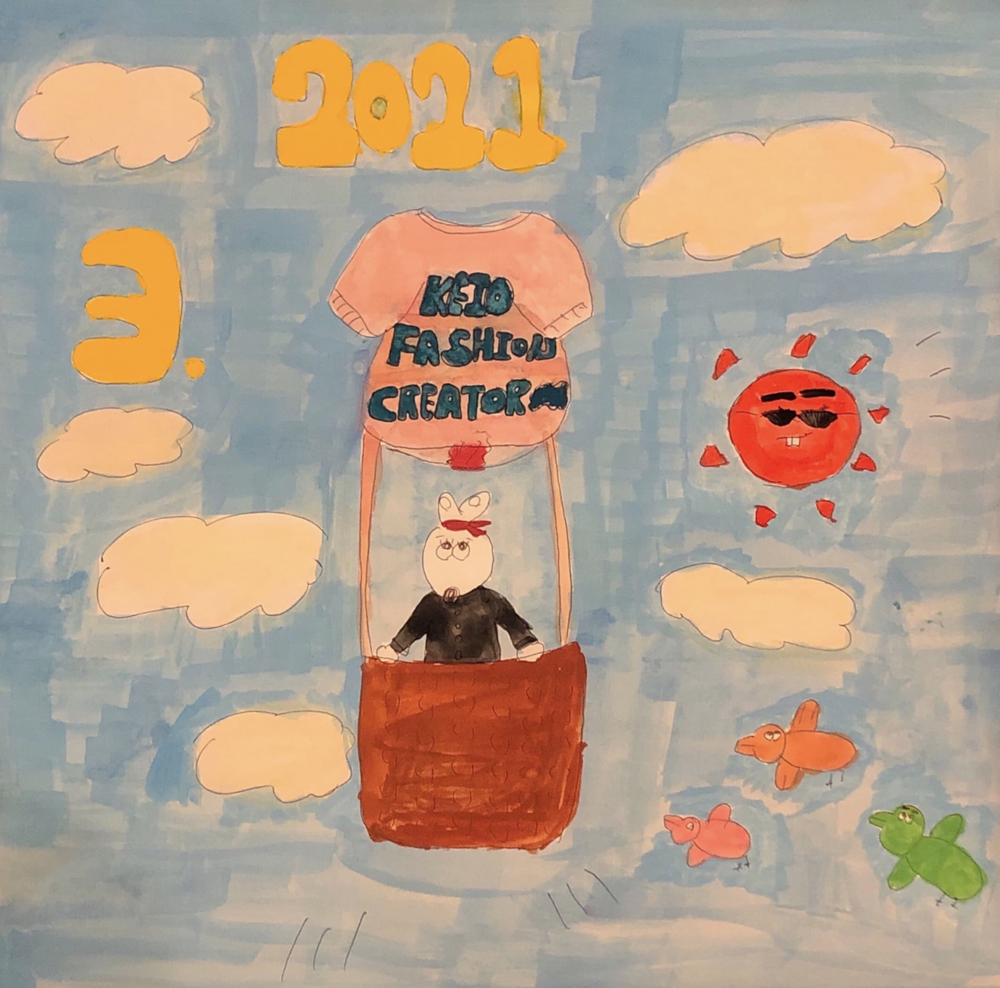
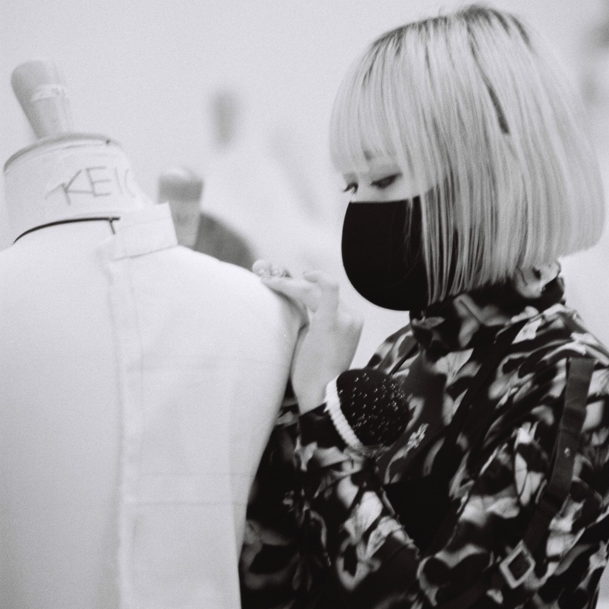
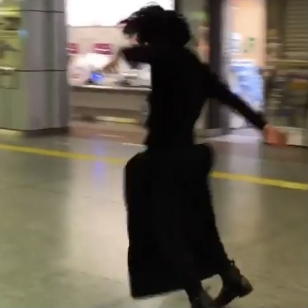
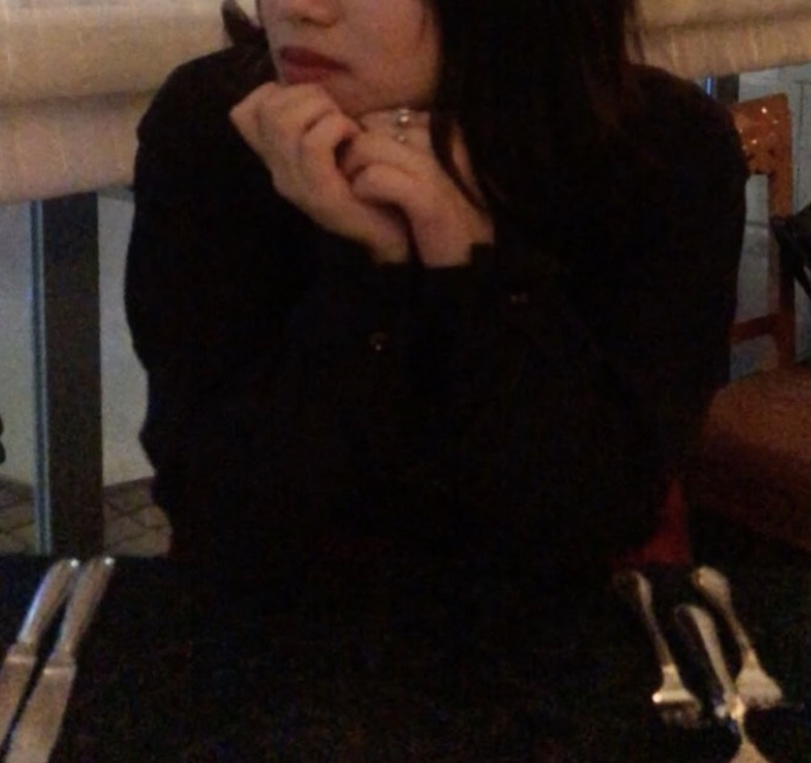

-

代表・PRESS
青山学院大学経営マーケティング学科
脇嶋のに花
Keio Fashion Creatorを一言で表すと「ファッションショーを1から創り上げる学生団体」です。この年に一度のファッションショーのために、ファッションクリエイター（私たち）は多大な時間と金額をかけて「より良いファッションショーの追求」を念頭に、日々邁進しております。
では「より良いファッションショー」とは何か。
皆さんは素敵な音楽を聴いたときの心に何かが刺さる"あの衝動"を体験したことはありますか。音楽に限らず映画、舞台劇、絵画、文学など人間が創り出した制作物に対して時を忘れてしまう程心から感動した体験。悲観的だった気持ちに陽が射して、悲しみや苦しみを忘却できる魔法の時間。私は、そのような魔法の時間を受け手側にお届けできるファッションショーが「より良いショー」であると考えており、今年は誰もが終演後に感動を持ち帰ることの出来るショーを完成させたいと思っています。決して、自己満足のクリエイションで終わらせてはいけません。これからの時代を担う私たちは"若い力×ファッションの魅力"で社会を明るい方向に導いていきます。 -
代表補佐・PRESS
----
谷舗悠人
主にHPの管理をしております。HPの制作に携われる方、勉強してみたいと思っている方（そして当団体のイメージに好感を持てる方）は是非入部お待ちしております。使用言語は問いません。サーバーサイドでも構いません（教えられませんが）。HPだけでなく、ミニゲームやWebアプリの制作にも乗り出せると面白そうですね。
当団体にはたくさんの素材(画像,動画,文章etc...)がアーカイブされていますし、ビジュアル面で言えばセンスの良い部員達が進んで協力してくれるでしょう。制作する上で得られる恩恵は意外と多いのです。
因みにですが、このHP重くね、と思った方、大変申し訳ございません。僕達に出来得る限りの対策は講じているのですが、なにせサイズ大きめの画像数が多いので、仕方ない部分もあるのです。これを改善できる方、もしくはHPに関する質問がある方は、TOPの右上にあるハンバーガーメニューを押下後のCONTACTにて、お待ちしております。
部員のブログやインタビューは結構面白いので是非ご覧くださいな。 -

DESIGNER CHIEF
慶應義塾大学
長瀬唯
ファッションショーを行う上で、デザイナーという役職はkeio fashion creatorの根幹とも言える存在です。 デザイナーは世界各地に点在するフランス発祥の服飾専門学校「 ESMOD JAPON 」と連携し、基礎から服作りを学びます。毎週土曜日、二人のESMODの講師の方にデザインやパターン、縫製等を一から教えてもらいながら作業を行っています。
当団体のデザイナーの大半は服飾系の専門学校ではなく4年制の総合大学に通っています。 各々の学びがデザインやクリエイションに相乗効果を生み出し、ファッションに限らず様々な分野における多角的な視点を涵養することができる点が最大の特徴です。 また、「デザイナー」と聞くと専門性が高く自分には分不相応だと感じる学生もいるかもしれません。ですが、当団体のデザイナーは入部するまで服を作ったことがない人が殆どです。 ミシンの使い方すら分からない状態から長い時間を費やして部員が作り上げた服、そしてその服をモデルが身に纏い歩く姿は観た人の心に響くものがあります。 -

PRESS CHIEF
上智大学
杉山陽紀
プレスの活動は主に『企業様とのお取り組み』と『SNS及びHPを中心とした広報活動』の二点によって構成されます。他役職に比べファッションショー自体への直接の貢献は少ないと言えますが、ショーを実際に成立させるにあたってプレスの様々な活動は決して欠かすことのできないものです。プレスの活動があるからこそ当団体が毎年度継続的にショーを行えているという点において、プレスという役職はKeio Fashion Creatorという団体の基盤を築いていると言っても過言ではないでしょう。
なかなか公から注目されることの少ない当役職ですが、『部員間でのグループワークを中心とした企画の作成』や『広報活動の分析・計画』を行うにあったって、プレスは”チームワーク”を最重要視し、プレスの魅力はまさにそこにあるとも言えます。部員間の積極的な交流がプレスにとって良い環境をもたらし、より精度の高い企画につながる。そしてそれが最終的にKeio Fashion Creator自体の日常的な活動やファッションショーに還元されると考えます。
他に類を見ないKeio Fashion Creatorという団体そのものの魅力や部員の多様な個性をより多くの方にお伝えするという命題を達成すべく、チームワークと柔軟な発想によって団体の基盤を築いていけるよう日々研鑽しています。 -

DIRECTOR CHIEF
国士舘大学文学部
飯田峻也
ディレクターという役職は、同団体の中でも一番活動の幅に制限がないといえます。なので「ショーの演出及びショーに向けたクリエーションを行う」ことを軸に据えているものの、コレといった活動がいくつも存在するわけではありません。もちろん、ショーの演出（ライティング、動線など）を考えるだとか、インビテーションを制作するだとか、言葉で説明することは簡単ですし、クリエーションの枠を設けることはとても大切です。でも、一義的な入り口から入って、それとなく出口から出てきたものはきっと味のないガムのような、ふにゃふにゃした生暖かいものでしょう。
つまり何が言いたいのかというと、「常にもう2,3歩進んだところで考えていたい」ということです。そんなディレクターという役職において求められる能力は、専門性の高いスキルから、構築的にゴールへと導くクリエーティブな知恵や思考力、芸術的センス、行動力、リサーチ力、インプット（アウトプット）する習慣など、どれも定量的ではないものばかりです。
またクリエーションとは、見えないものを見えるようにするプロセスのことであると私は考えます。先ほど偉そうに「知恵」と書きましたが、ここでの知恵とは、経験や知識が収斂し、無理矢理引き出さずとも自然に身体や頭が動く状態という意味です。それは言い換えれば、たったひと振りで食材の味に深みをもたらすスパイスのようなもの。その意味では私たちディレクターは、1年分の凝縮された「たったひと振り」を、最終目的である約20分間のショーにもたらすために存在しているといえるでしょう。まとまらないので最後に、他の3役職と代表、そして代表補佐の存在あってのKeio Fashion Creatorということを強調しておきます。 -

MODEL MANAGER CHIEF
駒澤大学
佐藤美和
私たちは一年間の集大成として12月にファッションショーを行いますが、モデルマネージャーはそれにおいてとても大切且つ、責任のある役職だと感じています。今年は挑戦の一年ということで、例年に増してさまざまな企画を組んでおり、その一つ一つの企画を通して、モデルハンティングや撮影当日のモデル管理を学ぶ機会がたくさんあります。私たちの集大成であるファッションショーに歩いていただくモデルの選定、管理を通して各々が責任とKeio fashion creatorの一員であるという自覚が持てるようにと考えています。また、デザイナーと向き合い、今年のテーマである“montage”におけるデザイナーの解釈を表現できるモデルを選べるよう、そして私たちのファッションショーが部員、観客の今後の人生のmontageとして、次なるステージへの一歩となるように邁進していきたいと考えています。